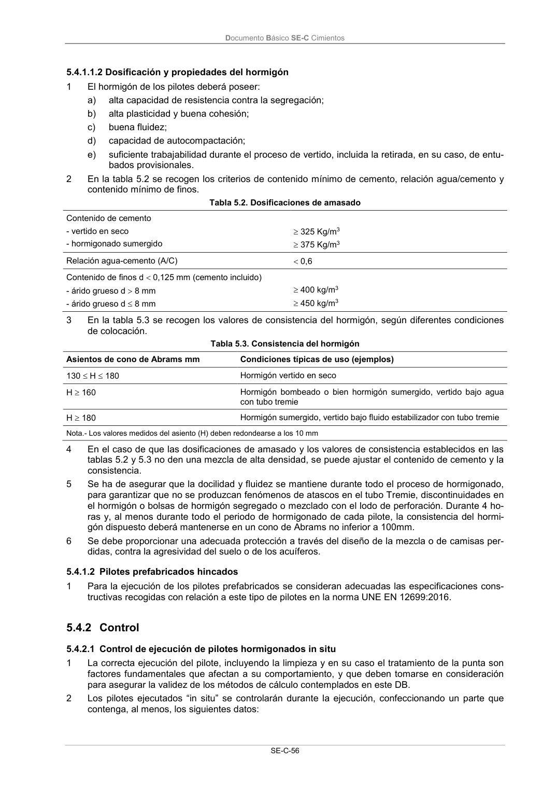

DB-SE-C · Fragmento de PDF p61 · versión 2019-12-20 · capa oficial
Formatos: JSON compacto · Markdown · PDF fuente
Ámbito del documento · texto del ámbito · documento y tablas
ID técnico a0143 · PDF pág. 61-62 · jerarquía no validada por persona · no es capítulo: sin_linea_de_encabezado · padre: raíz · literal original en el contenido: «5.4.2 Control 5.4.2.1 Control de ejecución de pilotes hormigonados in situ»
5.4.2 Control 5.4.2.1 Control de ejecución de pilotes hormigonados in situ 5.4.2.1 Control de ejecución de pilotes hormigonados in situ 1 La correcta ejecución del pilote, incluyendo la limpieza y en su caso el tratamiento de la punta son factores fundamentales que afectan a su comportamiento, y que deben tomarse en consideración para asegurar la validez de los métodos de cálculo contemplados en este DB. 2 Los pilotes ejecutados “in situ” se controlarán durante la ejecución, confeccionando un parte que contenga, al menos, los siguientes datos: Documento Básico SE-C Cimientos SE-C-57 a) datos del pilote (Identificación, tipo, diámetro, punto de replanteo, profundidad, etc.); b) longitud de entubación (caso de ser entubado); c) valores de las cotas: del terreno, de la cabeza del pilote, de la armadura, de la entubación, de los tubos sónicos, etc; d) tipos de terreno atravesados (comprobación con el terreno considerado originalmente); e) niveles de agua; f) armaduras (tipos, longitudes, dimensiones, etc.); g) hormigones (tipo, características, etc.); h) tiempos (de perforación, de colocación de armaduras, de hormigonado); i) observaciones (cualquier incidencia durante las operaciones de perforación y hormigonado). 3 Durante la ejecución se consideran adecuados los controles siguientes, según la norma UNE EN 1536:2011+A1:2016 (tablas 6 a 11): a) control del replanteo; b) control de la excavación; c) control del lodo; d) control de las armaduras; e) control del hormigón. 4 En el control de vertido de hormigón, al comienzo del hormigonado, el tubo Tremie no podrá des- cansar sobre el fondo, sino que se debe elevar unos 20 cm para permitir la salida del hormigón. 5 En los pilotes de barrena continua se consideran adecuados los controles indicados en la tabla 12 de la norma UNE EN 1536:2011+A1:2016. Cuando estos pilotes se ejecuten con instrumentación, se controlarán en tiempo real los parámetros de perforación y de hormigonado, permitiendo conocer y corregir instantáneamente las posibles anomalías detectadas. 6 Se pueden diferenciar dos tipos de ensayos de control: a) ensayos de integridad a lo largo del pilote; b) ensayos de carga (estáticos o dinámicos). 7 Los ensayos de integridad tienen por objeto verificar la continuidad del fuste del pilote y la resisten- cia mecánica del hormigón. 8 Pueden ser, según los casos, de los siguientes tres tipos: a) transparencia sónica; b) impedancia mecánica; c) sondeos mecánicos a lo largo del pilote. Además, se podrá realizar un registro continuo de parámetros en pilotes de barrena continua. 9 El número y la naturaleza de los ensayos se fijarán en el Pliego de condiciones del proyecto y se establecerán antes del comienzo de los trabajos. El número de ensayos no debe ser inferior a 1 por cada 20 pilotes, salvo en el caso de pilotes aislados con diámetros entre 45 y 100 cm que no debe ser inferior a 2 por cada 20 pilotes. En pilotes aislados de diámetro superior a 100 cm no debe ser inferior a 5 por cada 20 pilotes.

PDF fuente redistribuible: copia fiel enlazada en esta página (SHA256 verificado).